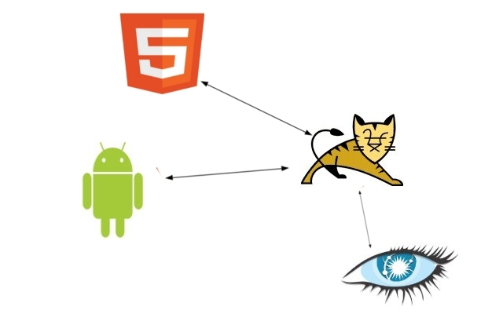
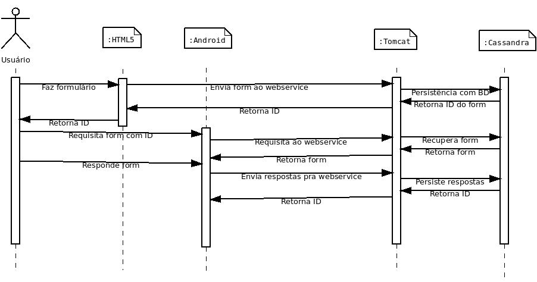

Projeto Final de Sitemas Distribuídos 2011
Esse trabalho foi desenvolvido durante o primeiro semestre de 2011.
É um sistema distribuído de criação, formatação e persistência de
questionários de forma trânsparente aos usuários. Também permite também a um usuário responder aos questionários e entregar
as respostas a um servidor. Cada componente é independente e só há troca de mensagens por rede.
Um Sistema composto de 4 componentes:
Cada componente resposável por uma implementação do sistema:
- HTML5: Criação e formatação dinâmica dos questionários.
- Android: Atráves de uma interface móvel com o usuário, permite as respostas aos questionários editados na componente anterior.
- Tomcat: Implementa os webservices necessários para a interface entre as duas primeiras componentes e o serviço de persistência Cassandra.
- Cassandra: Possui o serviço de persistência e recuperção dos questionários e suas respostas.
Esquematização:
Esquema
Na imagem acima, como funciona a troca de mensagens entre as componentes do sistema. [+]
![[+]](_content/esquemacomSetas.jpg){kind=link}
Caso de uso
Imagine um professor que queira fazer um estudo socio-econômico anônimo de uma classe do ensino médio. Usando seu notebook em casa, ele prepara os questionários e os grava . Ele prepara 5 celulares para receberem as respostas, e na sala de aula os alunos utilizam os celulares para responder às perguntas, no fim da aula o professor persiste os dados inseridos pelo alunos para posterior acesso .
Integração:
As componentes do sistema se comunicam sempre por rede (internet), usando o protocolo http e as questões
e as respostas são representadas através de mensagens XML.
Em a componente HTML5 envia por Post uma string contendo o questionário representado por um XML.
A Tomcat encapsula a XML em um objeto da interface da componente Cassandra e ordena a persistência. Cassandra retorna
a id para Tomcat, que a concatena na string da url que será usada para recuperar esses dados. A compoenente
Android utiliza essa url para adquirir as questões, Tomcat utiliza a id recebida para recupera junto ao Cassandra.
A string contendo o XML é retornada para a Android. As resposta são verdidas para um XML e enviada (para o Tomcat,
o procedimento seguinte é similiar ao do questionário.
Contexto
Contato
- UNIFESP
- ICT
- BCC
- Sistemas Distribuídos
- rjunior(at)unifesp(dot)br